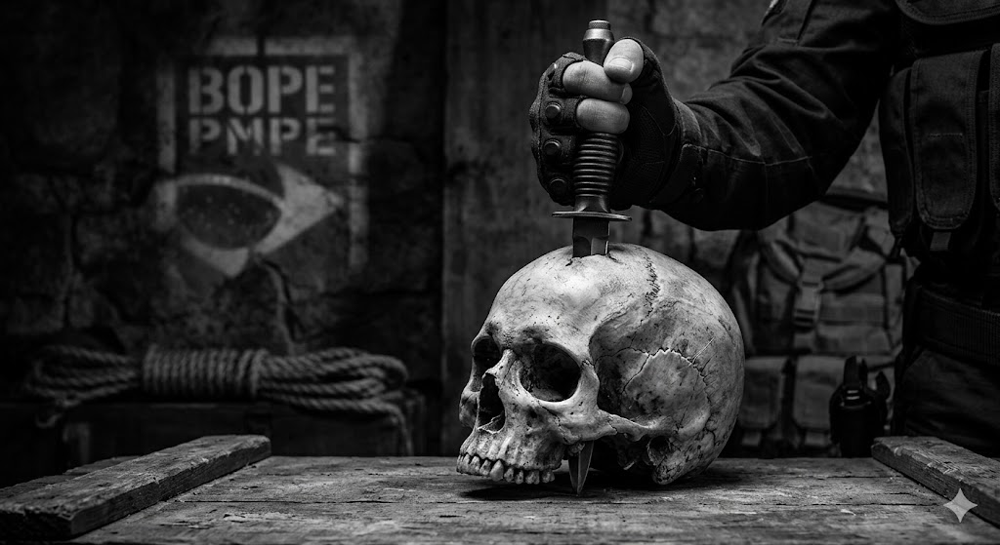

O BOPE (Batalhão de Operações Policiais Especiais) é uma unidade de elite da Polícia Militar, conhecida por atuar em situações de alto risco, como confrontos armados, resgates de reféns e operações em áreas com forte presença do crime organizado. Sua criação surgiu da necessidade de ter um grupo altamente treinado, capaz de responder com rapidez, precisão e disciplina a cenários onde o policiamento convencional não é suficiente.
Equipe tática especializada, geralmente composta por militares altamente treinados, cuja
missão principal é atuar em operações não convencionais, especialmente em ambientes hostis ou
controlados por forças adversárias.
Seu foco está em ações de infiltração, sabotagem e reconhecimento estratégico, operando de
forma discreta, rápida e com alto nível de autonomia.
Especializada em operações de alto risco, responsável por
atuar em situações que exigem resposta imediata e controle tático. Seu treinamento envolve
técnicas de combate urbano, resgate de reféns e gerenciamento de crises, garantindo ações
precisas e eficientes em cenários complexos.
(Clique no nome desejado para ser redirecionado)

A segurança pública é uma responsabilidade compartilhada entre as forças de segurança e a sociedade. O BOPE atua diariamente na proteção da vida, na preservação da ordem pública e no combate à criminalidade, mas a colaboração da população é fundamental para que esse trabalho seja cada vez mais eficaz.
Ao presenciar ou ter conhecimento de atividades criminosas, DENUNCIE. Sua identidade será mantida em absoluto sigilo, garantindo sua segurança e privacidade durante todo o processo.